大和ゆとりの森
| 日付 | 2018年6月17日（日） |
|---|---|
| メンバー | 家族（妻、長女・7歳、長男・5歳） |
| アクセス | 車 |
本日は曇予報。山や海には行けないため、ちょっと遠くの公園に行くことにする。
これまで行ったことのない公園を探していると大和ゆとりの森という公園を発見。
手頃な場所にあるため、行ってみることにする。
駐車場に車を停めたら公園に移動。
まだ9時半前なので、駐車場はたくさん空いていた。
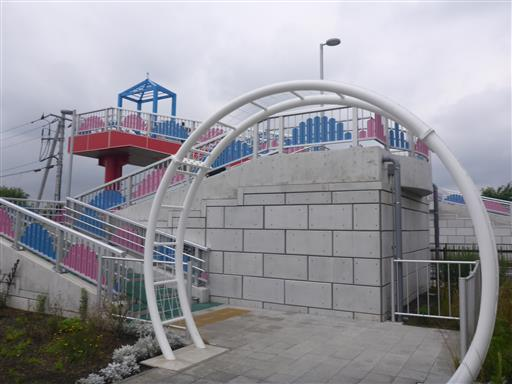
歩道橋を渡って公園内へ。子供たちは先行して走っていく。
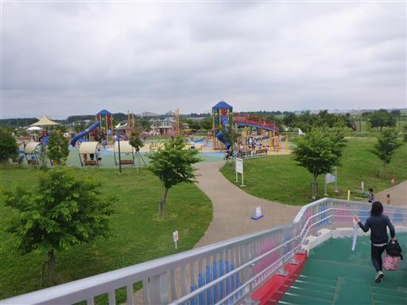
早速大きなネットの遊具に取り付く子供たち。
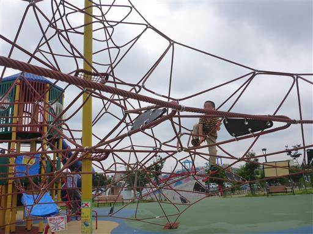
娘はあっという間に一番上まで登ってしまう。
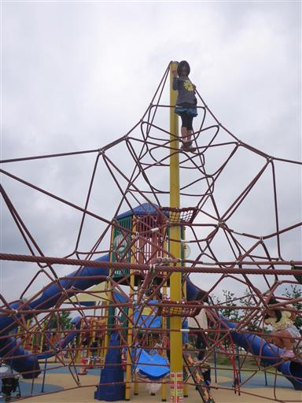
目が粗いネットのため、息子は娘ほど自由に移動することができない。
自分も上に登っていて写真を撮っていると…
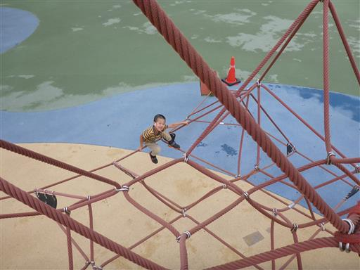
なんと、6～12歳以外は使用が禁止されている。
公園は、誰でもどうぞという公園と、やたら制限が厳しい公園があるが、ここは後者。
小学生以外はどうやってこの公園で遊べばよいのだろう？
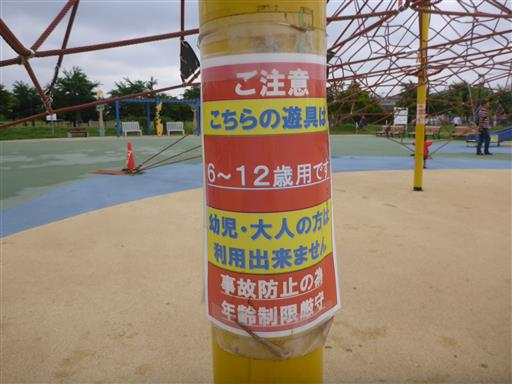
ところどころで立入禁止になっている。

中を覗くと完全に壊れている。
使用禁止の遊具はよく見かけるが、こんなに完全に壊れている遊具は初めて見た。
比較的新しそうな公園だが、一体何があったのだろう？
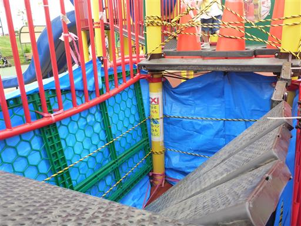
案外座り心地が良い椅子。
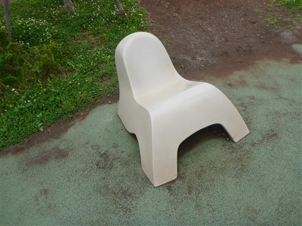
ふわふわドームで遊ぶ。今日は人が多いため、時間制限がある。
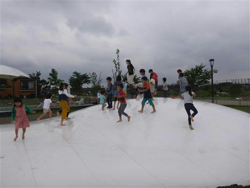
広場のテーブルで昼食をとる。昼に近づくとだんだん賑わってくる。

やまと山の標識。一応山だったのか…。標高は53.3m。
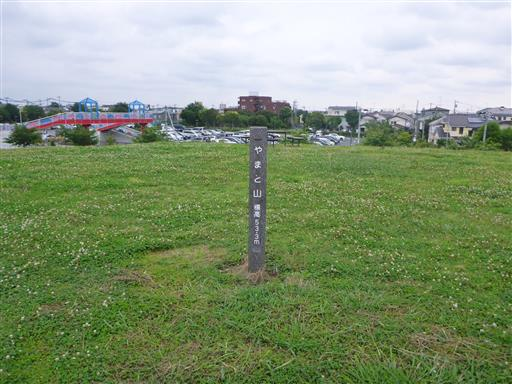
遊具に飽きてきたので、川沿いを散策する。
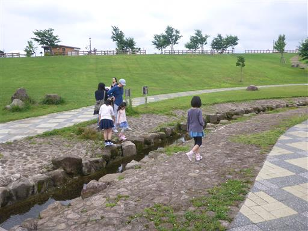
川の源流部。ここから先は厚木米軍飛行場で立入禁止だ。
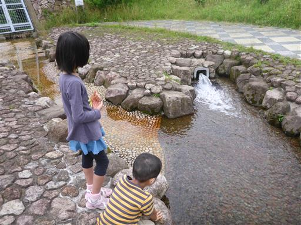
側の広場でバドミントンをして遊ぶ。
いろいろ制約が多く遊びにくい公園ではあったが、久し振りに公園遊びを楽しめた。
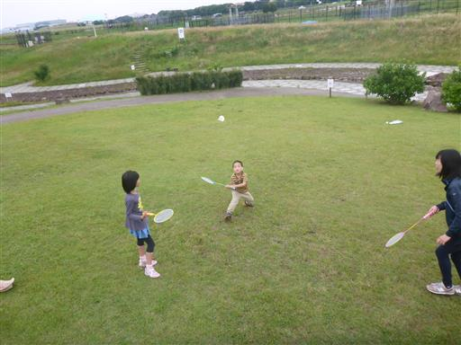